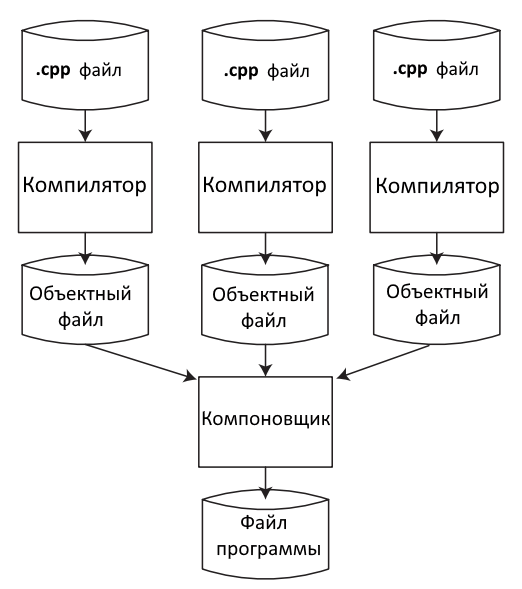

Программа на С++ состоит из набора инструкций. Каждая инструкция (statement) выполняет определенное действие. В конце инструкции в языке C++ ставится точка с запятой (;). Данный знак указывает компилятору на завершение инструкции. Например:
std::cout << "Hello World!";Данная строка выводит на консоль строку "Hello world!", является инструкцией и поэтому завершается точкой с запятой. Набор инструкций может представлять блок кода. Блок кода заключается в фигурные скобки, а инструкции помещаются между открывающей и закрывающей фигурными скобками:
{
std::cout << "Hello World!";
std::cout << "Bye World!";
} В этом блоке кода две инструкции, которые выводят на консоль определенную строку.
Каждая программа на языке С++ должна иметь как минимум одну функцию - функцию main(). Именно с этой функции начинается выполнение приложения. Ее имя main фиксировано и для всех программ на С++ всегда одинаково. Функция также является блоком кода, поэтому ее тело обрамляется фигурными скобками, между которыми определяется набор инструкций. В частности, при создании первой программы использовалась следующая функция main:
#include // подключаем заголовочный файл iostream
int main() // определяем функцию main
{ // начало функции
std::cout << "Hello World!"; // выводим строку на консоль
return 0; // выходим из функции
} Определение функии main начинается с возвращаемого типа. Функция main в любом случае должна возвращать число. Поэтому ее определение начинается с ключевого слова int.
Далее идет название функции, то есть main. После названия в скобках идет список параметров. В данном случае функция main не принимает никаких параметров, поэтому после названия указаны пустые скобки. Однако есть другие варианты определения функции main, которые подразумевыют использование параметров. В частности, нередко может встречаться следующее определение функции main, использующей параметры:
int main (int argc, char *argv[])
{
} В примере выше на консоль выводится строка, но чтобы использовать вывод на консоль, необходимо в начале файла с исходным кодом подключать библиотеку iostream с помощью директивы include.
#include // подключаем библиотеку iostream Директива include является директивой препроцессора. Каждая директива препроцессора размещается на одной строке. И в отличие от обычных инструкциий языка C++, которые завершаются точкой с запятой ; , признаком завершения препроцессорной директивы является перевод на новую строку. Кроме того, директива должна начинаться со знака решетки #. Непосредственно директива "include" определяет, какие файлы и библиотеки надо подключить в данном месте в код программы.
Исходный код может содержать комментарии. Комментарии позволяют понять смысл программы, что делают те или иные ее части. При компиляции комментарии игнорируются и не оказывают никакого влияние на работу приложения и на его размер.
В языке C++ есть два типа комментариев: однострочный и многострочный. Однострочный комментарий размещается на одной строке после двойного слеша //:
#include // подключаем библиотеку iostream
int main() // определяем функцию main
{ // начало функции
std::cout << "Hello World!"; // выводим строку на консоль
return 0; // выходим из функции
} // конец функции Многострочный комментарий заключается между символами /* текст комментария */. Он может размещаться на нескольких строках. Например:
#include
/*
Определение функции Main
Выводит на консоль строку Hello World!
*/
int main()
{
std::cout << "Hello World!"; // вывод строки на консоль
return 0;
} Создание исполняемого файла из исходного кода на C++ в общем случае состоит из трех этапов:
1. Препроцессор обрабатывает все директивы препроцессора (например, директиву #include)
2. Компилятор обрабатывает каждый файл с исходным кодом и создает из него объектный файл, который содержит машинный код. Например, код может разбросан по нескольким файлам с исходным кодом, и для каждого файла создается свой объектный файл
3. Компоновщик (он же линкер/линковщик) объединяет все объектные файлы в единую программу. Данный процесс называется компоновкой/линковкой
Например, если у нас исходный код находится в трех файлах .cpp
